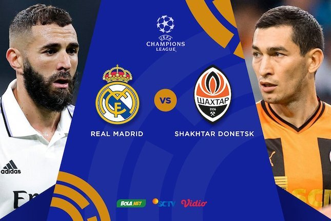
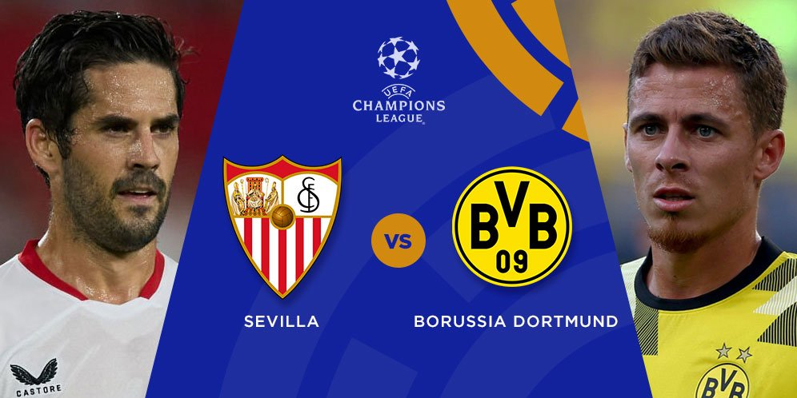

REAL MADRID VS SHAKHTAR DONETSK
Madrid - Real Madrid berhadapan dengan Shakhtar Donetsk dalam matchday ketiga Grup F
Liga Champions. Los Blancos berhasil menang dengan skor 2-1.
Real Madrid vs Shakhtar berlangsung di Santiago Bernabeu, Kamis (6/10/2022) dini hari WIB. El Real
memimpin 2-0 lebih dulu lewat Rodrygo dan Vinicius Junior.
Shakhtar menghidupkan asa dengan memperkecil ketertinggalan 1-2 lewat Oleksandr Zubkov. Namun,
di babak kedua tak ada gol tambahan tercipta dan Madrid menang dengan skor 2-1
Hasil ini membuat Madrid masih mantap di puncak klasemen dengan sembilan poin.
Shakhtar ada di posisi kedua dengan empat poin.
SEVILLA VS DORTMUND
Sevilla menjamu Dortmund dalam matchday ketiga Grup G Liga Champions.
Meski bermain di hadapan suporter sendiri, Sevilla tumbang 1-4.
Dortmund mencabik-cabik gawang Sevilla tiga kali di babak pertama lewat Raphael Guerreiro,
Jude Bellingham, dan Karim Adeyemi. Sevilla sempat memperkecil di babak kedua lewat Youssef En-Nesyri,
namun tim tamu menambah gol lagi lewat Julian Brandt.
Kekalahan itu menjadi akhir dari perjalanan Lopetegui di Sevilla yang dimulai pada Juni 2019.
Klub langsung mengumumkan pemecatan lewat situs resmi.
Klik Disini untuk BeritaBola selanjutnya
Klik Disini untuk BeritaBola sebelumnya